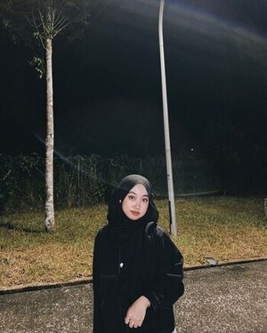

I am Nurul Hikmah, Full Time Student
I am a full-time student at Universiti Teknologi MARA, Sarawak Branch, and I currently reside in Beaufort, Sabah. I am currently enrolled in Information Management courses through the School of Information Science and the College of Computing, Informatics, and Media. I spend my days learning about information agencies in depth, including editing, multimedia, computing, and information. Yes, thanks to what I've learned, I can now create my own website. I am a work and study enthusiast who appreciates simplicity and crafts beautiful user interfaces with love.